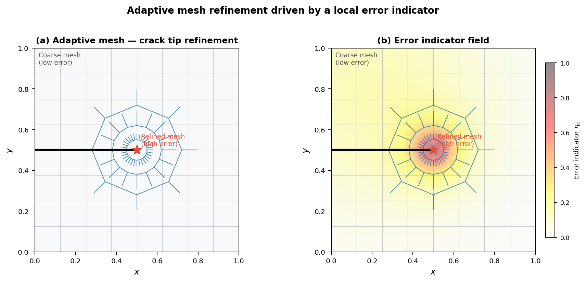

13 Error Estimation and Adaptivity
Work through these hands-on notebooks alongside this chapter:
13.1 Simple Error Estimates for Vector Problems
After computing a solution \(\mathbf{u}_h\), we need to assess its quality.
A posteriori error estimators use the solution itself to estimate the error in each element, guiding us on where the mesh needs improvement.
The core idea is to check for violations of physical principles. For elasticity, the exact stress tensor is continuous across element boundaries. Our FE stress field, \(\boldsymbol{\sigma}_h\), is usually discontinuous. The size of this stress jump can be used as an indicator of local error.
For a face \(\gamma\) between elements \(K^+\) and \(K^-\), the jump is:
\[\mathbf{j}_{\gamma} = \boldsymbol{\sigma}_h^+ \mathbf{n} - \boldsymbol{\sigma}_h^- \mathbf{n}\]
The local error indicator \(\eta_K\) for element \(K\) sums the jumps over its faces:
\[\eta_K^2 = \frac{1}{2} \sum_{\gamma \subset \partial K} \int_{\gamma} ||\mathbf{j}_{\gamma}||^2 \, d\Gamma\]
The total estimated error is then \(\eta^2 = \sum_K \eta_K^2\). This gives us a computable error value for each element.
13.2 Local Mesh Refinement (h-Adaptivity)
The power of a posteriori error estimates lies in driving adaptive mesh refinement.
Instead of uniformly refining the entire mesh (which is inefficient), we add elements only where the error is large. This is a simple and powerful feedback loop.
13.2.1 The Adaptive Algorithm
1. Solve: Compute the FE solution \(\mathbf{u}_h\) on the current mesh.
2. Estimate: For every element \(K\), compute the local error indicator \(\eta_K\).
3. Mark: Identify elements for refinement. A common strategy is to mark all elements \(K\) where the error is a significant fraction of the maximum:
\[\text{Mark element } K \text{ if } \eta_K > \theta \cdot \eta_{\max} \quad (\text{e.g., } \theta = 0.5)\]
4. Refine: Subdivide each marked element into smaller ones (h-refinement).
5. Repeat: Loop back to Step 1 and solve on the new, locally denser mesh.

13.3 A Posteriori Recovery Methods: The Core Idea
Recovery methods work on a simple principle:
The raw FE stress field (\(\boldsymbol{\sigma}_h\)) is “noisy” and inaccurate, but we can recover a better, smoother stress field (\(\boldsymbol{\sigma}^*\)) from it. The difference between the two is an excellent measure of the error.
Why recover? FE stresses are calculated from derivatives, which amplifies error and makes the field discontinuous. The recovered field \(\boldsymbol{\sigma}^*\) is continuous and much closer to the true stress \(\boldsymbol{\sigma}\).
13.3.1 Error Estimation Formula
We estimate the error by assuming the recovered solution is the “truth.” The error in energy for an element \(K\) is the energy of the difference:
\[\eta_K^2 = \int_{K} (\boldsymbol{\sigma}^* - \boldsymbol{\sigma}_h)^T \mathbf{L}^{-1} (\boldsymbol{\sigma}^* - \boldsymbol{\sigma}_h) \, dK\]
The main challenge is finding a good way to “recover” \(\boldsymbol{\sigma}^*\).
13.4 The Zienkiewicz-Zhu (ZZ) Estimator
The Zienkiewicz-Zhu (ZZ) estimator is a classic recovery technique that builds a smooth stress field using special, highly accurate points within elements.
13.4.1 Superconvergent Points
For many elements, there are specific locations—called superconvergent points—where the calculated stresses are much more accurate than anywhere else. For common elements, the Gauss points used for integration (or some of them) are superconvergent.
13.4.2 The ZZ Method
The method constructs a global, continuous stress field \(\boldsymbol{\sigma}^*\) that best fits the high-quality stress values found at these superconvergent points.
- The recovered field is approximated using the same shape functions as the displacement field:
\[\boldsymbol{\sigma}^*(\mathbf{x}) = \mathbf{N}(\mathbf{x}) \boldsymbol{\sigma}_{\text{nodal}}^*\]
Here, \(\boldsymbol{\sigma}_{\text{nodal}}^*\) is a vector of unknown, continuous stress values at the mesh nodes.
- These nodal stresses are found by a global least-squares fit to the superconvergent point data. We find \(\boldsymbol{\sigma}_{\text{nodal}}^*\) that minimizes:
\[\sum_{\text{elements}} \sum_{\text{Gauss pts}} || \mathbf{N}(\boldsymbol{\xi}_i)\boldsymbol{\sigma}_{\text{nodal}}^* - \boldsymbol{\sigma}_h(\boldsymbol{\xi}_i) ||^2\]
13.5 Superconvergent Patch Recovery (SPR)
Solving a global least-squares problem can be expensive. A more practical variant is Superconvergent Patch Recovery (SPR), which works locally on patches of elements.
The SPR algorithm finds the recovered stress at a single node p:
13.5.1 5-Step SPR Algorithm
Define Patch: Identify all elements connected to node p.
Assume Polynomial: Assume a simple polynomial for the recovered stress over the patch:
\[\boldsymbol{\sigma}^*(\mathbf{x}) = \mathbf{P}(\mathbf{x}) \mathbf{a}\]
Sample Points: Collect the raw FE stress values \(\boldsymbol{\sigma}_h\) from all superconvergent (Gauss) points within the patch.
Local Fit: Solve a small least-squares problem to find the polynomial coefficients \(\mathbf{a}\) that best fit the sampled data.
Evaluate at Node: Use the fitted polynomial to calculate the recovered stress value directly at the node’s location: \(\boldsymbol{\sigma}^*_p = \mathbf{P}(\mathbf{x}_p)\mathbf{a}\).
This is repeated for all nodes to define the continuous field \(\boldsymbol{\sigma}^*\), which is then used to compute the error indicators \(\eta_K\).
13.6 Comparing Error Estimators
A direct comparison highlights the different strategies for evaluating FE error. One method checks for violations of physical laws, while the other tries to construct a better solution.
13.6.1 Stress Jump (Residual) Estimator
Core Philosophy: “How much does my solution violate the physical laws?”
What it Measures: Violation of equilibrium at element interfaces.
Physical Intuition: Unbalanced forces at element boundaries.
Mathematical Basis: Rigorous. Provides a proven upper bound on the error.
Pros: - Mathematically sound - Conceptually linked to the PDE
Cons: - Can sometimes underestimate the error - Doesn’t provide a “better” solution to look at
13.6.2 Zienkiewicz-Zhu (Recovery) Estimator
Core Philosophy: “Can I construct a better solution from the one I have?”
What it Measures: The difference between the raw FE stress and a “cleaner” field.
Physical Intuition: Filtering a noisy signal to get a smooth one.
Mathematical Basis: Heuristic. Relies on the phenomenon of superconvergence.
Pros: - Often very accurate - Provides a useful, smooth stress field \(\sigma^*\) for visualization
Cons: - More complex to implement
13.6.3 Summary
The Jump Method is like a “referee” checking if the rules are followed. The ZZ Method is like an “artist” creating a better picture from a blurry photo.
13.7 A Posteriori Residual Methods: The Concept
Residual-based methods offer a more mathematically rigorous approach. They don’t need a “recovered” solution. Instead, they directly measure how poorly the FE solution satisfies the original governing differential equation.
13.7.1 The Residual
The residual is what’s left over when you plug the approximate solution \(\mathbf{u}_h\) back into the governing PDE. If \(\mathbf{u}_h\) were the exact solution, the residual would be zero everywhere:
\[\mathbf{r} = \nabla \cdot \boldsymbol{\sigma}_h + \mathbf{f} \neq \mathbf{0}\]
13.7.2 Key Idea
These methods produce a proven upper bound on the solution error. This means we can guarantee the true error is no larger than our estimate (times a constant):
\[\| \mathbf{u} - \mathbf{u}_h \|_E \le \eta_{\text{residual}}\]
The final estimator is a sum of terms measuring the residual inside elements, the jumps between elements, and the error in satisfying boundary conditions.
13.8 Breaking Down the Residual Error Estimate
The total residual error is a sum of local contributions that capture all the ways our solution fails to be exact. The squared error is bounded by a sum of these terms:
\[\| \mathbf{u} - \mathbf{u}_h \|_E^2 \le C_1 \sum_{K} h_K^2 \| \mathbf{r}_K \|^2_{L^2(K)} + C_2 \sum_{\gamma} h_{\gamma} \| \mathbf{j}_{\gamma} \|^2_{L^2(\gamma)} +C_3 \sum_{\gamma_t} h_{\gamma} \| \mathbf{t}_{\gamma_t} \|^2_{L^2(\gamma_t)}\]
13.8.1 Three Components of the Residual
1. Interior Residual (\(\mathbf{r}_K\)): Measures how well the equilibrium equation is satisfied inside each element \(K\):
\[\mathbf{r}_K = \nabla \cdot \boldsymbol{\sigma}_h + \mathbf{f}\]
2. Interface Residual (\(\mathbf{j}_{\gamma}\)): This is the familiar stress jump across interior element faces, \(\gamma\). It measures the violation of force balance between elements:
\[\mathbf{j}_{\gamma} = \boldsymbol{\sigma}_h^+ \mathbf{n} - \boldsymbol{\sigma}_h^- \mathbf{n}\]
3. Boundary Residual (\(\mathbf{t}_{\gamma_t}\)): Measures how well the solution satisfies the prescribed traction \(\bar{\mathbf{t}}\) on Neumann boundaries \(\gamma_t\):
\[\mathbf{t}_{\gamma_t} = \bar{\mathbf{t}} - \boldsymbol{\sigma}_h \mathbf{n}\]
13.8.2 Local Error Bound
The local error at an element is given by:
\[C_1 h_K^2 \| \mathbf{r}_K \|^2_{L^2(K)} + C_2 h_{\gamma} \| \mathbf{j}_{\gamma} \|^2_{L^2(\gamma)} +C_3 h_{\gamma} \| \mathbf{t}_{\gamma_t} \|^2_{L^2(\gamma_t)}\]
This decomposition allows us to identify which elements have the largest contributions to the total error, guiding adaptive refinement strategies.